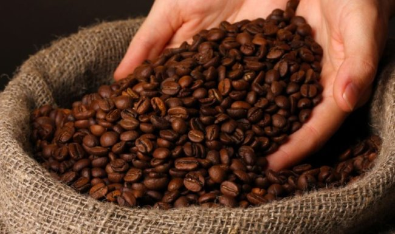

맛있는 원두 고르는 법
요즘 어느 커피 전문점에 들어서더라도 진열대 한쪽엔 다양한 종류의 원두들이 판매한다.
블렌드와 싱글 오리진
먼저 시중에서 판매되는 원두는 크게 ‘블렌드’와 ‘싱글 오리진’으로 구분된다. 이 정보만으로도 원두의 큰 특징을 짐작할 수 있다,
‘블렌드(Blend)’는 여러 나라에서 온 원두를 섞은 것을 말한다.
‘싱글 오리진(Single Origin)’은 보통 한 나라에서 재배된 원두를 일컫는 것으로, 더 좁게는 한 농장, 한 협동조합에서 재배된
원두까지 포함한다
원산지
다음으로는 원두의 원산지를 살펴보는 것이 중요하다. 와인의 맛에 결정적인 영향을 끼치는 요인은 다름 아닌 원료가 되는 포도의 산지인 것처럼, 커피 역시 원두의 뿌리라 할 수 있는 커피나무 열매가 재배되는 지역이 어디인지를 보면 맛에 대한 힌트를 얻을 수 있기 때문이다. 포장지에는 원두의 상품명이나 생산 국가의 이름과 재배 지역을 표기해 놓는다. 예를 들어 에티오피아 예가체프 G2(Ethiopia Yirgacheffe G2)는 에티오피아의 예가체프라는 지역에서 재배된 원두를 말한다. 에티오피아는 예가체프 외에도 하라(Harrar), 시다모(Sidamo), 짐마(Djimmah), 리무(Limmu) 등의 재배 지역이 있으며, 이 역시 상품명에 표기하여 판매하고 있다.
등급
원두의 등급도 빠뜨릴 수 없다. 원두의 등급을 표시하는 지표를 상품명에서 찾아볼 수 있는데, 상품명 끝에 붙어있는 영문자와 숫자다. 위에 예로든 에티오피아 예가체프 G2의 경우엔 ‘G2’가 2등급(Grade 2) 원두를 가리킨다. 케냐 AA의 ‘AA’는 케냐 원두의 가장 높은 등급을 의미한다.
이 밖에도 원두를 고를 시 포장에서 눈여겨봐야 할 것들은 많다. 원두를 햇볕에 말리는 ‘건식법(Dry Process)’을 거친 원두는 점액질이 붙어서 건조가 되기 때문에 과육의 당 성분이 그대로 흡수되어 단맛과 바디감이 좋다. 반면 물로 벗겨내는 ‘습식법(Wet Process)’이 사용된 원두는 신맛이 강하면서 깔끔하고 맑은 향미를 가진 점이 특징이다.